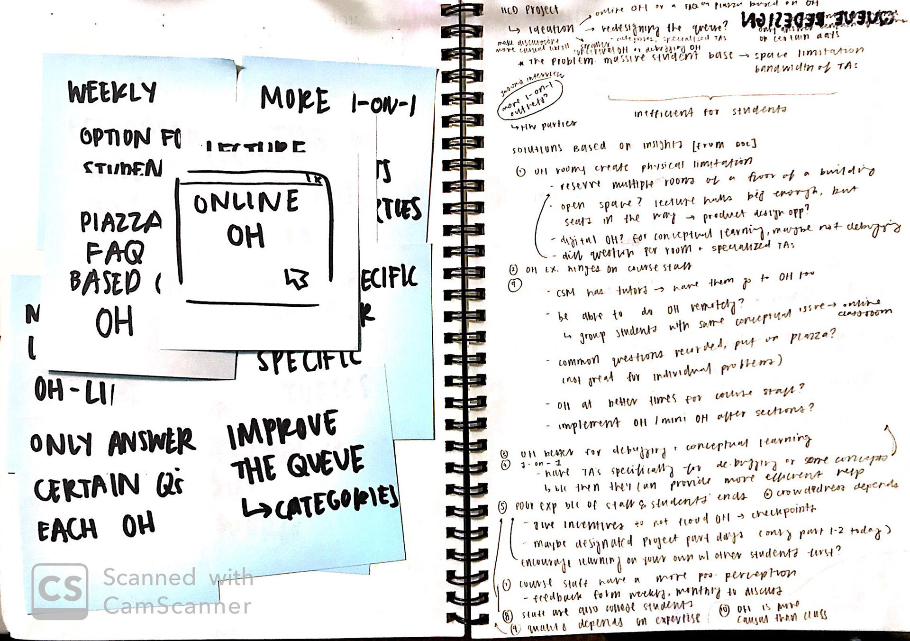
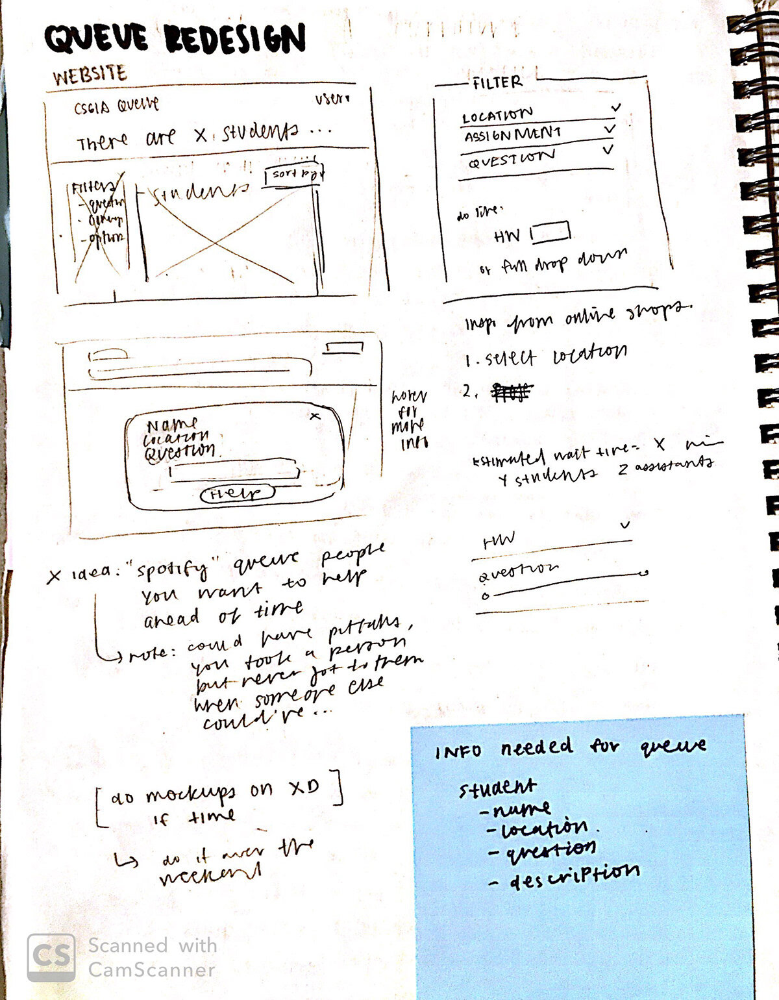
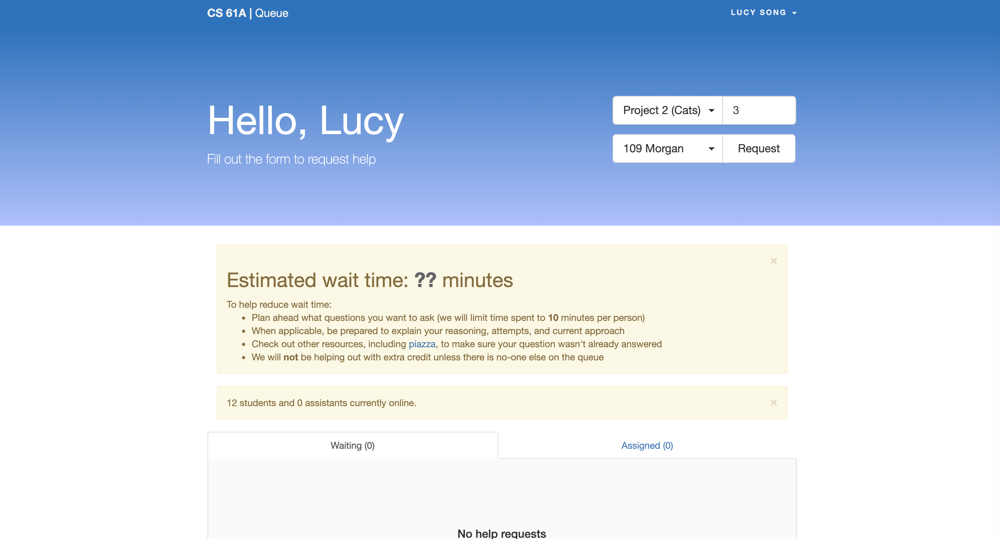
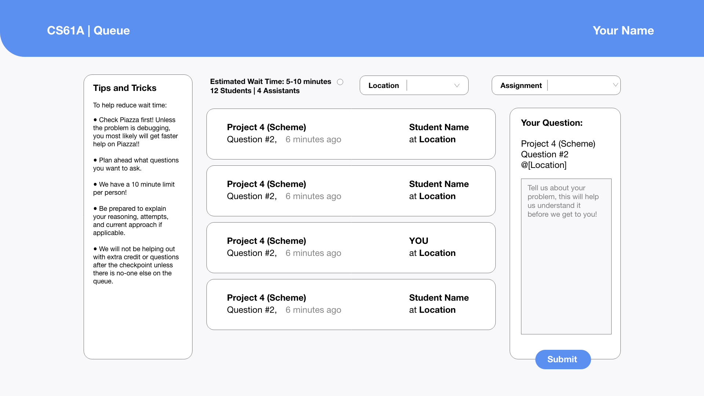
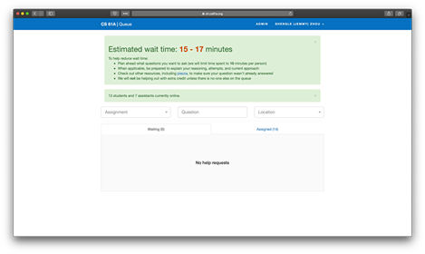
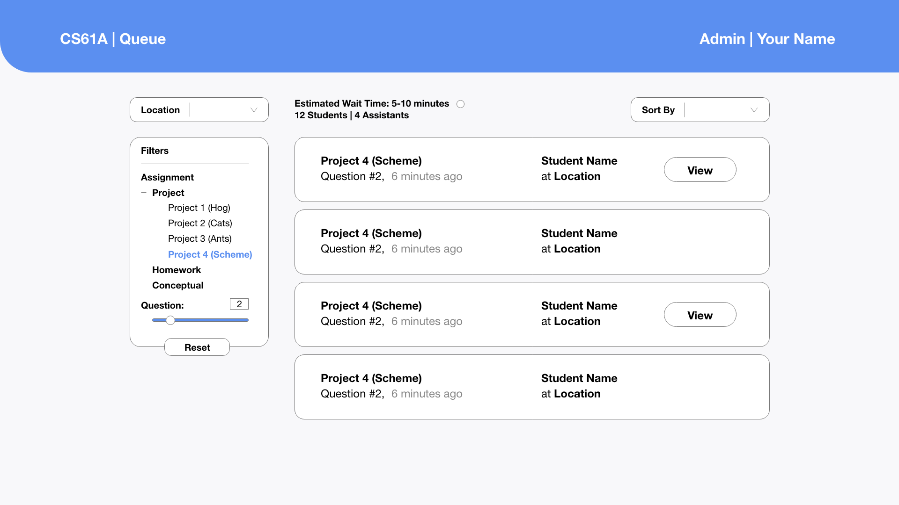

Redesigning the CS Office Hours Experience
Duration:
8 weeks, Fall 2019
Worked with:
Amy Jiang, Angela Lee, Jordan Yee, Yixin Zhang
Role:
We interviewed and researched together, then diverged to design our individual solutions, so all designs are my own.

Problem—
CS office hours are notorious for being inefficient and stressful.
Office hours provide an extra resource for college students who need extra help. Due to the massive number of students in computer science (CS) classes here at UC Berkeley, office hours (OH) implement an online queue system to systematically help students.
However, CS office hours are notorious for being inefficient and stressful for not only students, but also the teaching assistants, tutors, and academic interns (students who help facilitate OH).
However, CS office hours are notorious for being inefficient and stressful for not only students, but also the teaching assistants, tutors, and academic interns (students who help facilitate OH).
Purpose—
OH allow students to get extra help, which can make a real difference in conceptual understanding.
The OH setting is more casual than a traditional classroom which allows students to open up more and feel more comfortable asking questions. It is also a place where TA's can work 1-on-1 with more of their students as they have less of a time-constraint.
User Research—
OH Staff are college students too.
We interviewed 3 people each to compile insights, conducted secondary research to identify the specific pain points of OH for both students and instructors. Then diverged to design our individual solutions, so all designs are my own. View the full findings here.
Insights—
- Piazza provides quicker help, but it is more difficult to address issues such as debugging or gaining a better conceptual understanding over Piazza than through OH.
- OH is a great place for conceptual learning because students get more personalized one-on-one help.
- The faults with office hours stem from all sides,not just with its immediate facilitators (course staff).
- Course staff have a more positive perception of OH effectiveness, because they are often more productive than students.
- It is hard to remember that the staff are also college students with their own schedules and limitations because of the tense environment long wait times and deadlines can create.
Problem, Redefined—
Office Hours are overcrowded and understaffed
Unfortunately, the CS department does not have the budget to hire enough teaching staff to properly support so many students, and it shows. Rooms are overcrowded with many students sitting on the floor, wait times are long, and help sometimes isn't very helpful. The OH experience is exceptionally bad as a project deadline draws closer. This impacts a student's ability to get help on their work, which can create stress that negatively impacts mental health. So,
how might we improve the office hours experience?
how might we improve the office hours experience?
Ideation & Sketches—
Redesigning the online queue
I set a timer for two minutes and wrote down one idea on a post-it note until time ran out. Then I tried to match each post-it note to each insight and wrote out any additional thoughts I had. I sketched wireframes and variations of my ideas.


Mid-Fi Mockups—
Student View:


The original (left) and my redesign (right).
- The Assigned tab felt redundant as students typically only care about when it is almost their turn and not if it is someone else's, so I removed it.
- I chose a different page layout to better utilize vertical space.
- Before, your Queue Ticket would open in another page. By having it save on the right side, I eliminated that unnecessary feature.
Instructor View:


The original (left) and my redesign (right).
- Again, the Assigned tab felt redundant because instructors only care about who they have been assigned to, so I removed it.
- I used a similar page layout to better utilize vertical space.
- In addition, I added a Sort By filter to help instructors find requests they could help with easily and efficiently.
- I took inspiration from online shopping to redesign the list instructors scrolled through to pick an question to help with.
Not all instructors understand every homework or project inside and out. Some are more comfortable helping with specific parts or questions and they can use the left side to filter those out. Instructors who know what they are doing can help more efficiently.
User Testing + Changes—
TA's are always trying to reduce wait time.
I talked to more TA’s and graduate student instructors for feedback and to discuss my redesign. We brainstormed how to actually make the process of selecting students to help more efficiently. Some changes I made following their feedback:
A Common Mistakes Section Have GSI's post common mistakes seen in previous office hours earlier that week on Piazza to decrease the number of people in OH with the same issues.
OH Tips and Tricks An advantage of a packed room is that students can interact with their surrounding peers and work on problems together while they wait. This is suggested as a tip for students and to Admin/TA’s to cut down on wait time overall.
A Common Mistakes Section Have GSI's post common mistakes seen in previous office hours earlier that week on Piazza to decrease the number of people in OH with the same issues.
OH Tips and Tricks An advantage of a packed room is that students can interact with their surrounding peers and work on problems together while they wait. This is suggested as a tip for students and to Admin/TA’s to cut down on wait time overall.
Final Prototype—
Student-side
Instructor-side—
Closing Thoughts—
This project highlighted the advantages of talking to your users.
This project made me appreciate the CS TA's even more. Office hours is difficult to run, since there will always be more students than instructors.
Something I forgot to consider was what feedback both the instructor and student should receive from the queue. In person, the instructor typically calls for the student within the classroom. But even so, there should be some UI for when the instructor is done and needs to move on to another student.
By this point it was the end of the semester. My class didn't require us to user test, but I did end up sending these prototypes to the student instructors who I talked to initially and it was received positively and passed on to the other course staff at the time!
Something I forgot to consider was what feedback both the instructor and student should receive from the queue. In person, the instructor typically calls for the student within the classroom. But even so, there should be some UI for when the instructor is done and needs to move on to another student.
By this point it was the end of the semester. My class didn't require us to user test, but I did end up sending these prototypes to the student instructors who I talked to initially and it was received positively and passed on to the other course staff at the time!